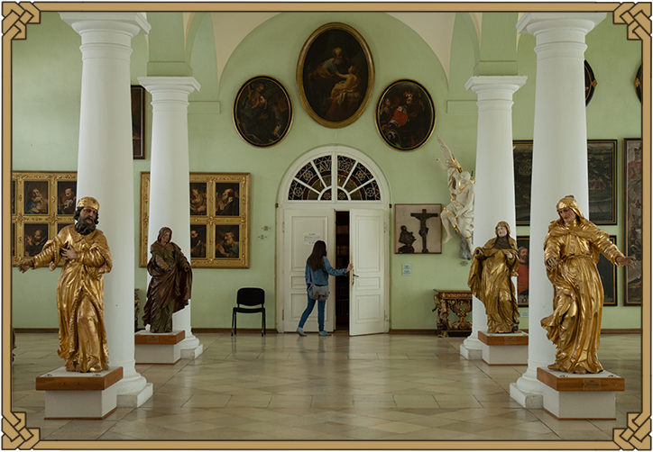
Luciin den začíná osmou hodinou ranní, kdy vstupuje do třetí největší klášterní knihovny v České republice.
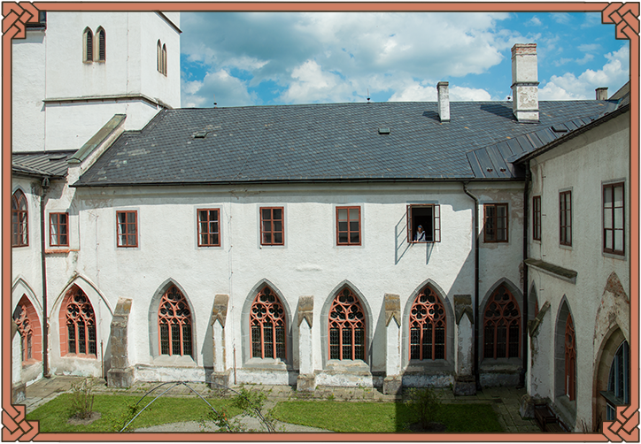
Lucie pracuje v historické knihovně Cisterciáckého opatství Vyšší Brod jako restaurátorka knižní vazby a papírových dokumentů.
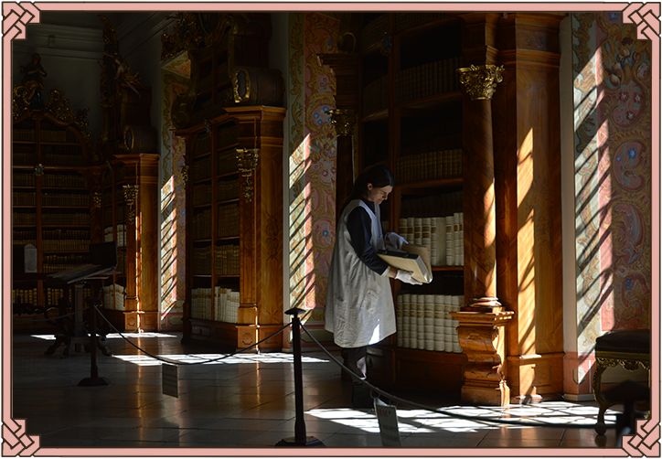
Nejen moudrost obsažená v knihách, ale i grafické zpracování knižního bloku spolu s knižní vazbou vždy Lucii fascinovaly.
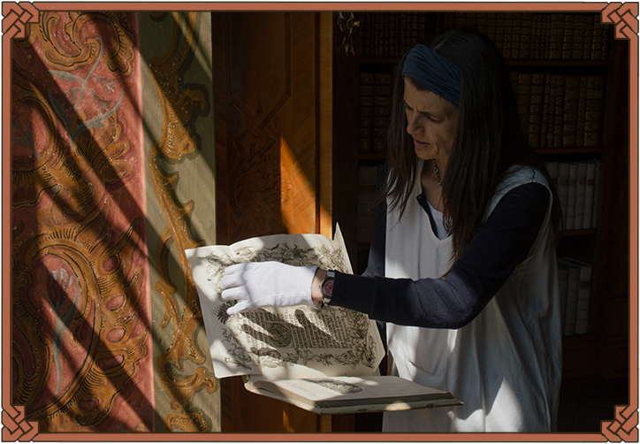
Pokud si Lucie všimne poškození u knihy, odnese ji do restaurátorského pracoviště. Tento ateliér je v těsné blízkosti historické knihovny, což je velkou výhodou.
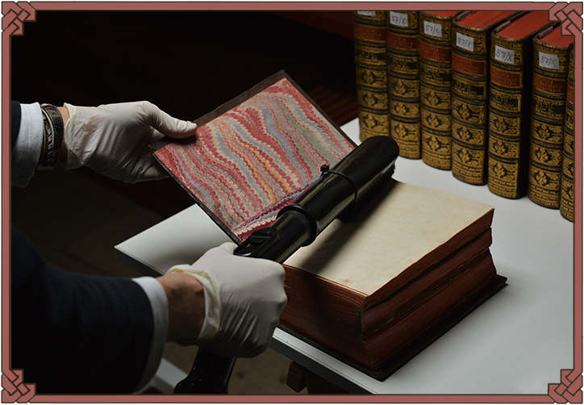
Knihy jsou zbavovány prachového depozitu vysáváním pomocí vysavače se speciálními filtry.
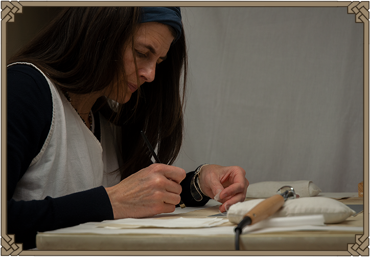
Lucie se potřebuje při práci soustředit, aby zvládla provést konzervaci co nejprecizněji.
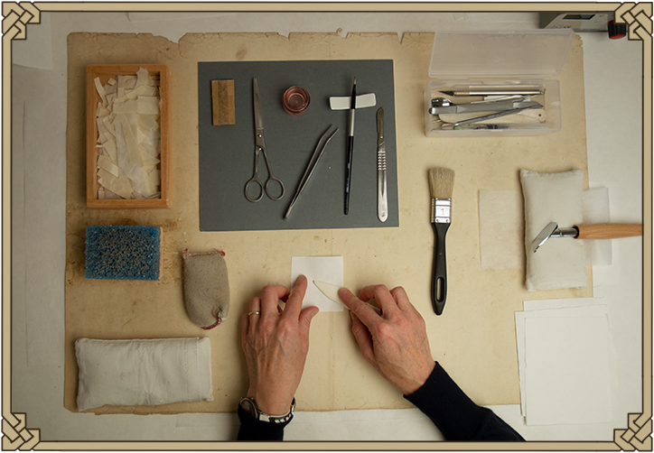
Většinou spravuje trhliny na papírové podložce nebo doplňuje chybějící části. K tomu potřebuje speciální nářadí.
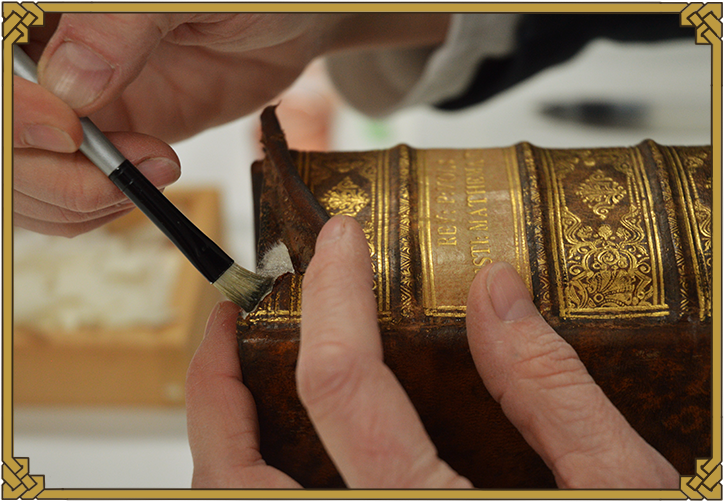
Nejčastějším poškozením, které se objevuje v historické knihovně, jsou natržené hlavice u hřbetů knih.
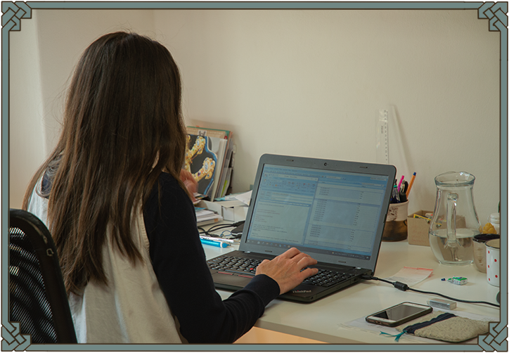
Tak jako mnoho zaměstnání v dnešní době se Luciina práce neobejde bez práce na počítači, na kterém vyřizuje korespondenci.
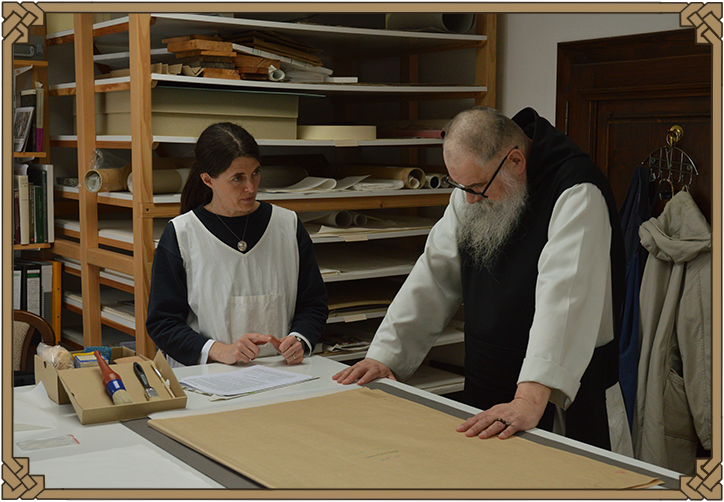
Lucie má často schůzky s převorem kláštera, se kterým diskutuje o postupech a organizaci práce.
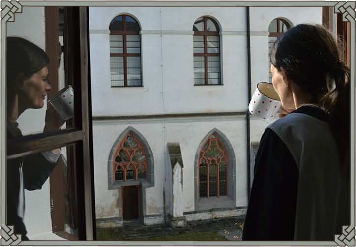
Po dobře odvedené práci si Lucie vychutnává indický čaj ze svého oblíbeného hrnku.